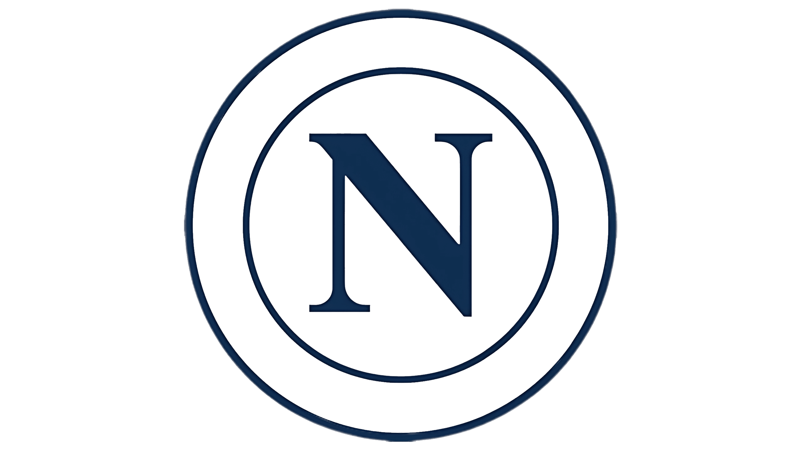
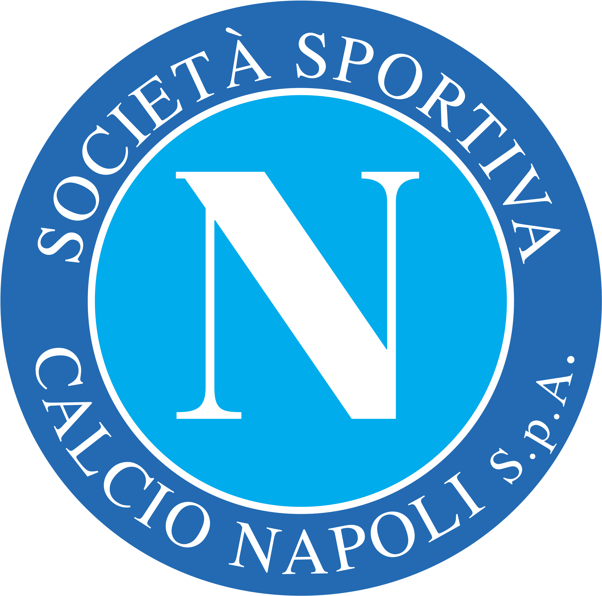
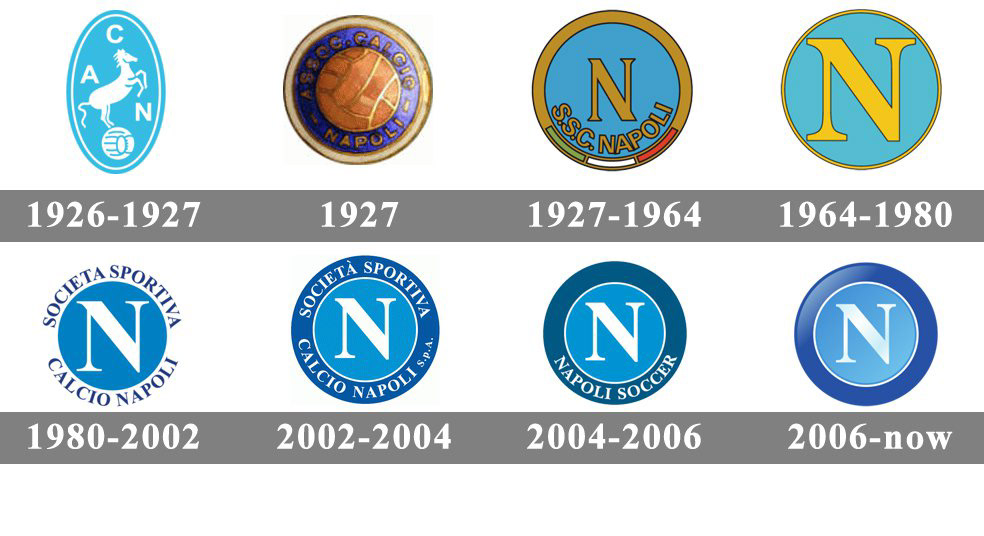

This was Napoli's badge from 2006 to 2024. Napoli won a scudetto in 22/23 with this badge. I grew up with this badge, and it means a lot to me!

This is Napoli's current badge/logo. This was introduced in 2024 and it is currently still in use!

This badge was in use from 1980-2002. It is the most succesful badge in SSC Napoli's history, being worn by legends like Diego Maradona!
